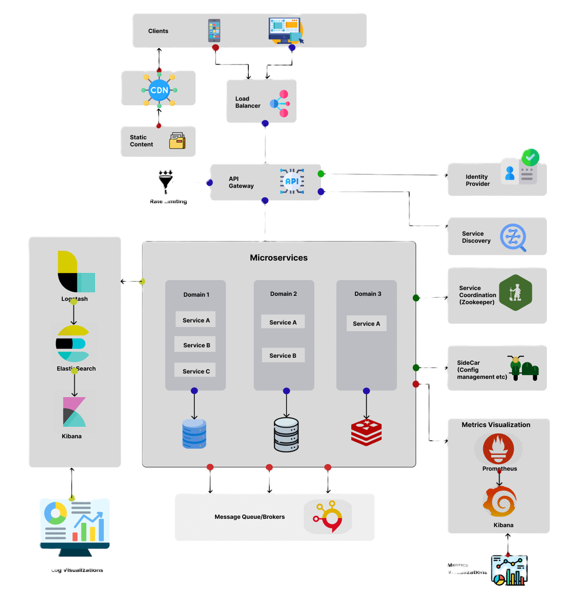

1. Microservices Architecture
2. Microservices Components
| Service | Dependency | Properties | Annotations |
|---|---|---|---|
| Eureka Server | spring-cloud-starter-netflix-eureka-server | eureka: client: register-with-eureka: false fetch-registry: false | @EnableEurekaServer |
| Eureka Client | spring-cloud-starter-netflix-eureka-client | eureka: client: service-url: defaultZone: http://localhost:8761/eureka | |
| Config Server | spring-cloud-config-server | spring: cloud: config: server: git: url: <YOUR_GIT_REPO_URL_HERE > clone-on-start: true | @EnableConfigServer |
| Config Client | spring-cloud-starter-config | spring: config: import: optionai.configserver:http://localhost:8888 | |
| API Gateway | spring-cloud-starter-gateway | spring: cloud: gateway: discovery: locator: enabled: true lower-case-service-id: true routes: - id: products url: lb://product-service predicates: - Path=/products/** filters: - AddRequestHeader=X-Request-Gateway, API-GW | |
| Resilience4 | resilience4j-spring-boot3 | resilience4j: circuitbreaker: instances: userService: register-health-indicator: true sliding-window-size: 5 minimum-number-of-calls: 3 failure-rate-threshold: 50 wait-duration-in-open-state: 5s retry: instances: userService: max-attempts: 3 wait-duration: 2s timelimiter: instances: userService: timeout-duration: 2s | @CircuitBreaker(name = "userService", fallbackMethod = "fallbackUser") @Retry(name = "userService") @TimeLimiter(name = "userService", fallbackMethod = "fallbackUserFuture") |
| Zipkin and Sleuth | spring-cloud-starter-zipkin spring-cloud-starter-sleuth | spring.zipkin.base-url=http://localhost:9411/ | @EnableSleuth |
| Feign client | spring-cloud-starter-openfeign | feign: client: config: default: connectTimeout: 5000 readTimeout: 5000 loggerLevel: full | @EnableFeignClients @FeignClient(value = "DEPARTMENT-SERVICE", url = "http://localhost:8080") public interface APIClient { @GetMapping(value = "/api/departments/{id}") @DepartmentDto getDepartmentById(@PathVariable({ "id"}) Long departmentId); } |
3. Differences between RestTemplate , WebClient and Feign Client
1. RestTemplate (Legacy)
- Type: Synchronous, blocking HTTP client (Spring Web module).
- Thread Model: Uses one thread per request, which can lead to thread exhaustion under high load.
- Usage: Works with traditional Spring MVC applications but is now deprecated in Spring 5+.
- Pros:
- Simple for basic HTTP calls.
- Well-documented and widely used in older applications.
- Cons:
- Poor scalability (blocks threads while waiting for responses).
- No support for reactive programming or HTTP/2.
- Requires manual URI construction and error handling.
- Example:
String response = restTemplate.getForObject("http://example.com/api", String.class);
2. WebClient (Modern)
- Type: Asynchronous, non-blocking HTTP client (Spring WebFlux module).
- Thread Model: Uses event-loop (Netty-based) for high concurrency with minimal threads.
- Usage: Ideal for reactive applications (Spring WebFlux) and high-performance systems.
- Pros:
- Supports reactive streams ( Mono / Flux ).
- High scalability (handles thousands of concurrent requests efficiently).
- Native HTTP/2 support.
- Fluent API for chaining requests.
- Cons:
- Requires understanding of reactive programming.
- Not declarative (unlike Feign).
- Example:
Mono<String> response = webClient.get() .uri("http://example.com/api") .retrieve() .bodyToMono(String.class);
3. Feign Client (Declarative)
- Type: Declarative HTTP client (Spring Cloud OpenFeign).
- Thread Model: Depends on the underlying client (can integrate with WebClient for non-blocking calls).
- Usage: Best for microservices with Spring Cloud (load balancing, service discovery).
- Pros:
- Declarative style (define interfaces with annotations).
- Integrates with Spring Cloud (Eureka, Circuit Breakers, Retry).
- Built-in load balancing (via Spring Cloud LoadBalancer).
- Simplifies REST client code.
Cons:
- Requires Spring Cloud dependencies.
- Less control over low-level HTTP settings.
Example:
@FeignClient(name = "example-service")
public interface ExampleClient {
@GetMapping("/api")
String fetchData();
}
Key Differences Summary
1. Blocking vs. Non-blocking:
- RestTemplate blocks threads.
- WebClient is fully non-blocking.
- Feign can be either (depends on configuration).
2. Programming Model:
- RestTemplate: Imperative.
- WebClient: Reactive (Flux/Mono).
- Feign: Declarative (interface-based).
3. Use Cases:
- RestTemplate: Legacy apps (avoid in new projects).
- WebClient: Modern, high-performance systems.
- Feign: Microservices with Spring Cloud.
4. Advanced Features:
- Feign supports load balancing, retries, and circuit breakers out of the box.
- WebClient supports streaming (e.g., Server-Sent Events).
- RestTemplate has no built-in resilience features.
Which One to Choose?
- For new Spring Boot 3+ applications, prefer WebClient (non-blocking, future-proof).
- For microservices with Spring Cloud, use Feign (declarative + integrations).
- RestTemplate should only be used for maintaining older applications.
All three can coexist in the same project, but WebClient is the recommended default for most cases.